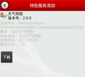
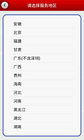
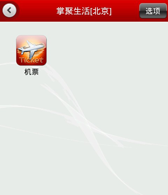
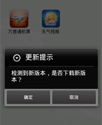
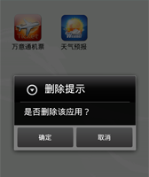

添加特色服务

- 点击“选项”选择“增加特色服务”；
- 选择您需要添加业务的地区；
- 进入该地区的特色服务列表；
- 选择您需要的特色服务，您可以直接点击“下载”下载安装该服务；
- 您还可以点击“详情”进入特色服务的详情页面，查看选择的特色服务的详细信息；
服务切换地区

- 您可以通过“服务地区切换”功能切换地区，以显示和使用所需地区的已安装的特色服务；
- 您可以点击“选项”，选择“服务地区切换”，进入地区列表，选择服务地区；
使用特色服务

- 进入特色服务功能；
- 选择已安装的特色服务；
- 如果该特色服务不需要更新，则可以正常使用该特色服务。
更新特色服务

如果特色服务需要更新，进入特色服务时系统会自动提示您更新，您可以按照提示进行更新，更新成功后即可正常使用该特色服务了。
删除特色服务

如果您不再需要掌聚生活中的某个特色服务，请在掌聚生活主页面长按该特色服务图标并拖入垃圾箱执行删除操作。
特色服务排序
您可以根据自己的喜好对掌聚生活中您下载的各个特色业务进行自定义排序，请在掌聚生活主页面长按特色业务图标并拖动至您希望的位置，释放图标即可完成自定义排序操作。